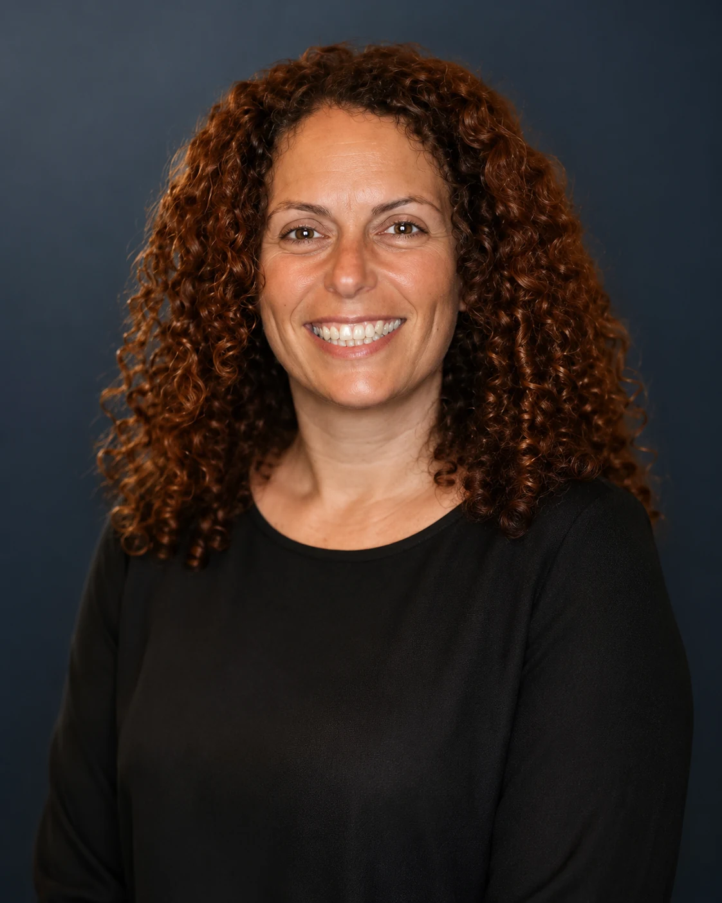

ד״ר עדי גרנט
פסיכולוגית קלינית, שיקומית ונוירופסיכולוגית
מדריכת פסיכולוגים ואנשי מקצוע בתחום הפסיכותרפיה
מרצה בפסיכולוגיה שיקומית באוניברסיטת אריאל ובמכללה למינהל
מנהלת השירות הפסיכולוגי במרכז הרפואי לשיקום לוינשטיין
טיפול פסיכולוגי ואבחון נוירופסיכולוגי לילדים, למתבגרים ולמבוגרים, לצד הדרכה מקצועית למטפלים — בקליניקה בפתח תקווה או בטיפול אונליין.
אפשר לפנות סביב משברי חיים ומעברים, טראומה ואובדן, התמודדות עם מחלה ושיקום, קשיים רגשיים בילדים ובמתבגרים והדרכת הורים.
קרוב לשלושה עשורים של ניסיון קליני, שיקומי, ניהולי ואקדמי — מתוך ראייה רחבה ורגישה של האדם ומשפחתו.
קליניקה פרטית ברחוב מוטה גור 7, פתח תקווה, מול הקניון הגדול

טיפול פסיכולוגי
טיפול פסיכולוגי בפתח תקווה לילדים, מתבגרים ומבוגרים
הקליניקה מציעה מענה ממוקד לאנשים ולמשפחות בתקופות של משבר, טראומה, מחלה או שינוי, לצד אבחון נוירופסיכולוגי והדרכת הורים. אפשר להיפגש בפתח תקווה או אונליין, בהתאם לצורך.
טראומה, פוסט־טראומה ואובדן
ליווי לאחר אירועים מטלטלים, אובדן ושכול, תוך התאמה אישית.
למידע על טיפול בטראומה ואובדןמחלה, כאב ושיקום רפואי
התמודדות נפשית עם מחלות כרוניות, כאב נוירופלסטי, פגיעה ושינויים בתפקוד.
למידע על טיפול במצבים רפואיים ושיקוםילדים, מתבגרים והדרכת הורים
טיפול בקשיים רגשיים ובמצבי משבר, בשילוב הורים בהתאם לגיל ולצורך.
למידע על טיפול בילדים ובהדרכת הוריםאבחון נוירופסיכולוגי
הערכה מקיפה של תפקודים קוגניטיביים ורגשיים והמלצות מעשיות להמשך.
למידע על אבחון נוירופסיכולוגי